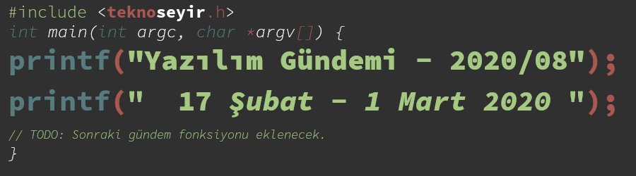
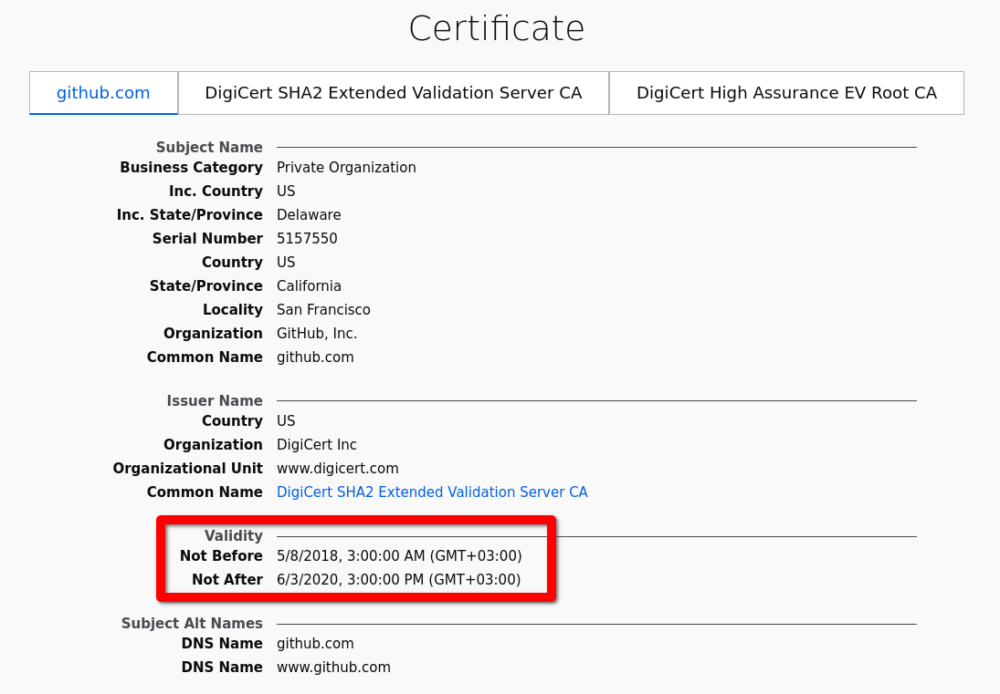
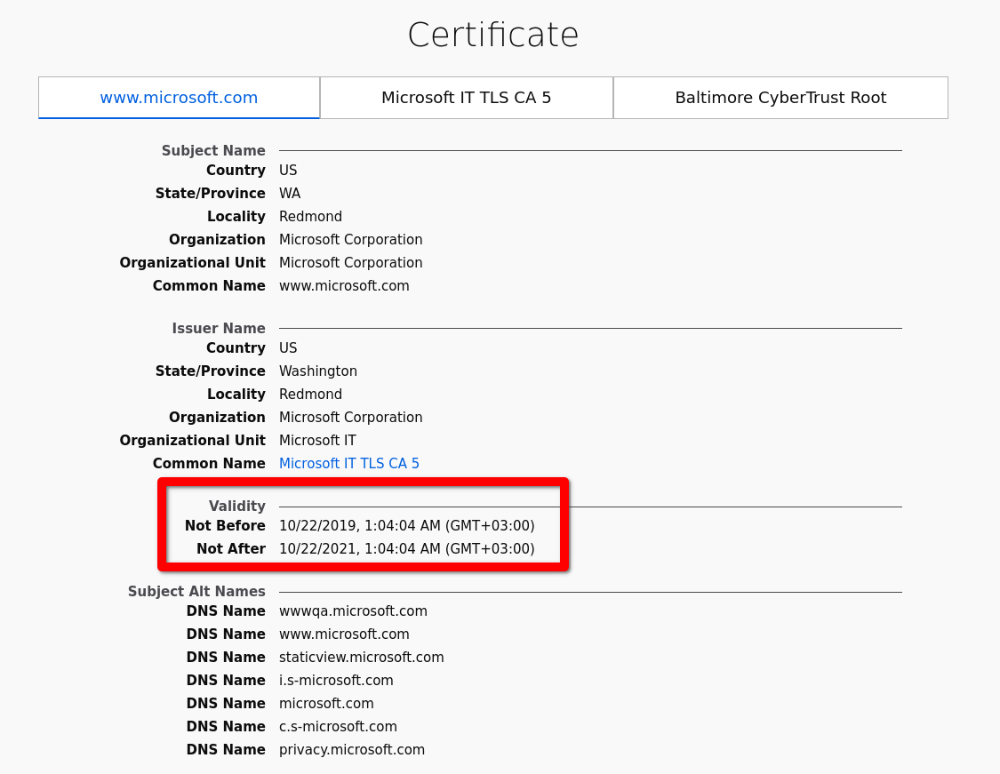

Yazılım Gündemi - 2020/08
17 Şubat - 1 Mart 2020
İçindekiler
- 1. Son 13 yılın tüm Apache Tomcat sürümlerini etkileyen güvenlik açığı ortaya çıktı: Ghostcat
- 2. Safari yakında 13 aydan uzun geçerliliği olan sertifikaları kabul etmemeye başlayacak
- 3. GitHub Öğrenci Geliştirici Paketi 100+ ücretsiz servis ve araç sayısına ulaştı
- 4. .NET Core 3 sürümü 3 Mart'da emekliye ayrılıyor
- 5. VueJS Belgeseli yayınlandı
- 6. Qt, Visual Studio Linux desteği için çalışmaya başlamış
- 7. Yaklaşan Etkinlikler
- 8. Diğer Haberler
- 9. Lisans

< Önceki Gündem | 17 Şubat - 1 Mart 2020 | Sonraki Gündem >
1 Son 13 yılın tüm Apache Tomcat sürümlerini etkileyen güvenlik açığı ortaya çıktı: Ghostcat
Şekil 2: Ghostcat Maskotu. Son yıllarda artık güvenlik açıklarının da maskotunun olması moda oldu.
Çinli siber güvenlik firması Chaitin Tech tarafından ortaya çıkan bu güvenlik açığı sayesinde kötü amaçlı kişiler sunucunuzdaki dosyaları okuyabilir, hatta bazı durumlarda ise yazabiliyor. 2007 yılından bu yana çıkmış bütün Apache Tomcat versiyonlarını kapsayan bu açık Java ile geliştirilmiş web uygulamalarını tehdit ediyor. Bulan araştırmacılar ise açığa "Ghostcat" ismini vermişler. Açığın uluslararası kodu ise CVE-2020-1938.
Aslında açığın asıl kaynağı Apache Tomcat'in içinde kullanılan bir AJP isimli parçadan kaynaklanıyor. Açılımı Apache JServ Protocol olan bu parça, sunucunun diğer Tomcat ya da Apache HTTPD sunucuları ile veri alışverişi yapabilmesine yarıyormuş. Bu parça tüm Tomcat sunucularında varsayılan olarak açık geliyor ve 8009 numaralı port üzerinden yayın yapıyor. Bu açık sayesinde hackerlar sunucunuzun ayar dosyaları okuyup, bir takım hassas verileri çalabilirler. Eğer sunucunuzda kullanıcıların dosya yüklemesini sağlayan bir mekanizma varsa bu açık sayesinde kötü amaçlı kişiler sisteminize bir takım zararlı yazılımlar da enjekte edebiliyorlar.
Açığı bulan firma ve Apache Tomcat birlikte çalışmışlar ve açığı kapatan sürüm güncellemelerini yayınlamışlar fakat bu güncellemeler sadece Tomcat 7.x, Tomcat 8.x ve Tomcat 9.x sürümleri için yayınlandı. Diğer sürümler hayatlarının sonuna gelmiş (End of Life) oldukları için o sürümler için güncelleme gelmeyecek.
Hangi sunucuların etkilendiğini tespit etmek güç olsa da BinaryEdge firmasına göre yaklaşık bir milyondan fazla Tomcat sunucusu şu an internette yayın yapmakta. Aynı zamanda Java ile web uygulama geliştirmeye yarayan Spring Boot kütüphanesinin de bu açıktan etkilenenler arasında olduğu söyleniyor.
Eğer sizin de Apache Tomcat üzerinden yayın yapan web uygulamalarınız varsa en kısa zamanda son sürüme güncellemenizi şiddetle tavsiye ederim.
2 Safari yakında 13 aydan uzun geçerliliği olan sertifikaları kabul etmemeye başlayacak
Apple ekosisteminin varsayılan tarayıcısı olan Safari, geçtiğimiz haftalarda düzenlenen 49'uncu CA/Browser Forum'unda yeni bir kural duyurdu: "Eğer sertifikanın geçerlilik tarihi 13 aydan fazla (398 gün) ise reddedeceğim". Yani demek oluyor ki web sitenizin HTTPS sertifikasını her yıl yenilemezseniz Safari tarayıcısı kullanıcılarına "bu site güvenli değil" uyarısı gösterecek.

Şekil 3: GitHub'ın güncel sertifika bilgileri

Şekil 4: Microsoft'un güncel sertifika bilgileri
GitHub ve Microsoft gibi büyük şirketler de fazla uğraşmamak için HTTPS sertifikalarını 2 yıllık alıyor. Eğer Safari bu kararından geri adım atmazsa Microsoft ve GitHub da sertifikalarını yenilemek zorunda kalacak.
Safari'nin neden böyle bir karar aldığını anlamak güç. Let's Encrypt gibi ücretsiz sertifika sağlayan otoritelerin otomatik yenileme araçları olsa da diğer otoritelerin böyle bir çözümü var mı emin değilim. Sizler de Safari'nin bu yeni kuralından etkilenmek istemiyorsanız aktif web sitelerinizin HTTPS sertifikalarının geçerlilik sürelerini kontrol edin.
3 GitHub Öğrenci Geliştirici Paketi 100+ ücretsiz servis ve araç sayısına ulaştı
GitHub'ın yaklaşık 6 yıl vermeye başladığı bu paket, bu hafta eklenen 14 teklifle birlikte 100'den fazla ücretsiz servis ve aracı öğrenci geliştiricilerle buluşturmaya devam ediyor. Üniversiteniz size .edu ya da .edu.tr ile biten bir mail adresi veriyorsa bu paketten siz de yararlanabiliyorsunuz. Bu adresten paketi almak için başvuru yapabilirsiniz. Genelde çok kısa bir süre içinde aktif oluyor paketiniz ve içerisinde geliştirme yaparken kullanabileceğiniz birçok araç ve hizmet var. Ben de üniversiteyken almıştım ve birçok avantajından faylanmıştım. Öğrenci arkadaşların mutlaka göz atmasını ve paketi almalarını tavsiye ederim. Sektöre hazırlık için çok faydalı olacak. Eğer üniversiteniz bu .edu ya da .edu.tr ile biten e-posta adresi sağlamıyorsa gerekli mercilere başvurarak ısrarla isteyiniz :)
Ayrıca bu hafta içerisinde GitHub'a çok satırlı kod önerme özelliği de beta olarak yayınlandı.
4 .NET Core 3 sürümü 3 Mart'da emekliye ayrılıyor
Microsoft'un açık kaynak olarak geliştirmeye devam ettiği .NET ekosisteminin ana parçası olan .NET Core'un 3 numaralı sürümü 3 Mart'tan itibaren emekliye ayrılıyor. Bu da demek oluyor ki bundan sonra .NET Core 3 sürümü için destek sunulmayacak. Microsoft onun yerine geçtiğimiz aylarda LTS (Long-term Support - Uzun dönemli destek) olarak duyurduğu 3.1 sürümüne geçmeyi tavsiye ediyor.
Bu sürüm güncellemesini yapmak için .csproj, .vbproj ya da .fsproj ile
biten proje dosyasınızı açıp içerisindeki şu satırı:
<TargetFramework>netcoreapp3.0</TargetFramework>
şununda değiştirebilirsiniz:
<TargetFramework>netcoreapp3.1</TargetFramework>
Eğer hali hazırda .NET Core 3 ile çalışan bir uygulamanız varsa o kadar da acele etmenize gerek yok fakat yavaş yavaş sürüm yükseltmeye hazırlanmanız sizin için iyi olacaktır.
5 VueJS Belgeseli yayınlandı
Popüler JavaScript kütüphanelerinden biri olan VueJS'in hikayesini geliştiricisi Evan You ve katkı sağlayan diğer geliştiricilerinden ağzından dinlemek için şu YouTube videosunu izleyebilirsiniz.
6 Qt, Visual Studio Linux desteği için çalışmaya başlamış
C++ ile platformlar-arası uygulama geliştirmeye yarayan uygulama çatısı Qt geçtiğimiz haftalarda yayınlandığı blog yazısıyla birlikte Visual Studio Linux sürümü için de Qt desteği sunmak için çalıştıklarını duyurdu. İlk sürümününü bu yılın yaz aylarında yayınlamayı planlıyorlarmış. Bu sayede zaten birçok platform için destek sunan Qt, kapsamını daha da genişletmiş olacak.
7 Yaklaşan Etkinlikler
8 Diğer Haberler
- Let's Encrypt, 1 milyar sertifika rakamına ulaştı.
- JetBrains 20 yaşında.
- JetBrains, Kotlin Census 2019 Anketini başlattı.
- Microsoft, Koronavirüs nedeniyle Game Developer Conference 2020 etkinliğini iptal etti. Facebook'da kendi geliştirici konferansını aynı nedenle iptal etti. RubyKaigi 2020 etkinliği de iptal edildi.
- Facebook, deneysel Javascript araç kutusunu açık kaynak olarak yayınladı: Rome.
- Netflix, kriz yönetim sistemini açık kaynak hale getirdi: Dispatch.
- Google, Cloud sistemi için monitörleme panellerinin API'sini duyurdu: Stackdriver Cloud Monitoring dashboards API.
- Özgür Yazılım Vakfı, 2020 yılı içinde kendi kod barındırma platformunu ayağa kaldıracağını duyurdu.
- JPEG komitesi yapay zeka bazlı resim sıkıştırma için çağrıda bulundu.
- Android Studio ve araçlarının yeni versiyonları yayınlandı:
- TypeScript 3.8 Final sürümü yayınlandı.
- Go programlama dilinin 1.14 sürümü yayınlandı.
- OCaml programlama dilinin 4.10 sürümü yayınlandı
- Nim Topluluk Anketi 2019 sonuçları yayınlandı.
- Rust dili için profilleyici tanıtıldı.
- R programlama dili 20 yaşında.
- CouchDB 3.0 sürümü yayınlandı.
- Swift takımı, ArgumentParser kütüphanesini duyurdu.
- Tech Debt Developer anketi sonuçları yayınlandı.
- State of Clojure 2020 anketi sonuçları yayınlandı.
- C++ kütüphanesi EnTT, 3.3.0 sürümünü yayınladı.
- IRedis aracının 1.2.0 sürümü çıktı.
- XMake v2.3.1 sürümü yayınlandı.
- Scala.JS kütüphanesinin ilk stabil sürümü 1.0.0 çıktı.
- Tarayıcı üzerinde çalışan metin editörü edtr.io tanıtıldı.
9 Lisans

Yazılım Gündemi - 2020/08 yazısı Eren Hatırnaz tarafından Creative Commons Atıf-GayriTicari-AynıLisanslaPaylaş 4.0 Uluslararası Lisansı (CC BY-NC-SA 4.0) ile lisanslanmıştır.